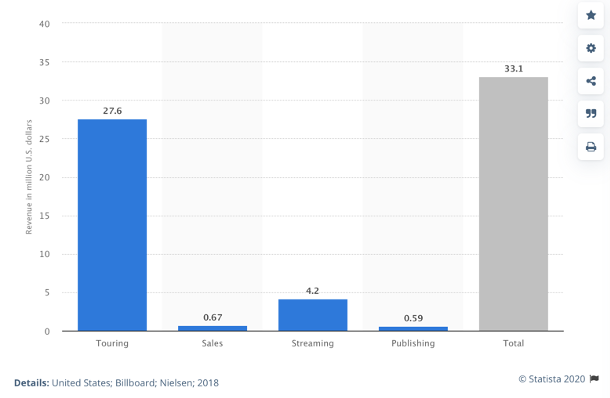
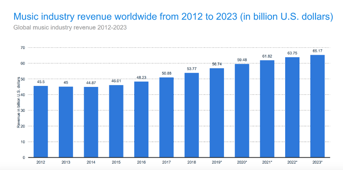

Abstract: The music industry in the United States has been a thriving industry since the success of publishers selling sheet music in “Tin Pan Alley” in the late 19th century. Over time, with technological advances, the music industry has blossomed into the multi-billion dollar industry it is today. As you are probably aware, however, the live music industry has been hit hard by the pandemic. The music industry is very familiar with disruptions, but Covid-19 has posed a new set of challenges for it to recover from. In order to thoroughly assess how Covid-19 is impacting the industry, we have to understand the current business model.
What is the role of live entertainmenr in the music industry?
Live entertainment, from a business perspective, is all about money and audience satisfaction. Since the creation of Napster in 1999, album sales have been in decline. Piracy made it very difficult in the early 2000s for the music industry to make money, so they had to adjust their business model. Apple played a big role in this transition by creating the iTunes store. This allowed individuals to purchase singles rather than full length albums for a fraction of the cost. However, this was not the ultimate solution because people still preferred to illegally download music than to pay for it. The question was clear: why pay for individual songs when Napster has them all for free? Spotify answered this question in 2006. The Swedish company gained popularity because it licensed content to users for a monthly fee as opposed to charging for each song. This business model changed the music industry and has slowly made recorded music more profitable than it was after the spike in piracy in the early 2000s, but nowhere near as profitable as it was in the 1990s. As a result, the music industry had to put more emphasis on touring in order to remain profitable for the long term.
Record labels do a lot for artists, but one of their main functions is to offer advances. An advance is essentially a loan a record label gives to an artist to create an album and, sometimes, to even fund a tour. Like any normal loan, artists are required to pay it back. The deal an artist signs determines what revenue streams go towards paying back the advance. One of the revenue streams that is included in repayment (recoupment) is touring. Revenues from sales, streaming, and publishing are incredibly small compared to revenue from touring. For example, in 2018, Beyoncé made $670,000 from album sales, $4,200,000 from streaming, and $590,000 from publishing. From touring, however, she made $27,600,000. With figures like these, it would be much faster for a record label to recoup their initial investment in Beyoncé by using revenue from touring. Note: this is not an isolated incident. Touring generates the most money for artists' revenue in the years that they tour.
Touring for musicians, however, is more than a money maker. It allows them to connect with audiences in a way that does not happen through studio recordings. There are also different motivations for session musicians compared to large recording artists. Session musicians, such as members of a band who are not part of the recording artist's ensemble, perform as a form of gaining experience and improving on their skill. Session musicians may not have the same intimate connection to the audience as the recording artist does, but performing is still important to them and their income. In the classical music world, musicians tour as part of their contracts with orchestras. They do not get paid extra, but touring increases the artists' and the institution's prestige. Touring is part of the experience and career for many musicians. The musicians get paid to do something they love all while improving their skillset. Not to mention, for all parties involved, touring can be a very fun thing to do.
Throughout most of recorded history, live performances have been used to entertain audiences. Traveling musicians were common, performing for wealthy individuals and institutions or busking on their own. In contemporary times, venues have become an important part of many communities because of a desire by cities and business managers to attract audiences for both entertainment and sports events. These events are desirable because of the economic benefits that result from them. Event spaces largely exist for the community and for the revenue generated by the tourism they inspire. It costs taxpayers money to build and maintain large event spaces, so community leaders are constantly aware of how much is being spent on those venues. The question then becomes, is the economic benefit of having the venue worth the amount of money spent to maintain them? Typically, the answer is yes, but the argument gets brought up every time a new large venue is slated to be built.
This argument, however, only applies to large venues. There are a plethora of small concert venues in this country that do not operate on taxpayer dollars. The owners and/or talent bookers for these venues book musicians that cater to the people in that community. Massive recording artists tour to venues where they can make the most money. That very well may be an arena in a town or city that people don't know much about, but where fans are willing to travel. Local venues are different. They book the artists they know will sell in their town or host local performers. It is a numbers game whether the venue is civic, for-profit, or not-for-profit. Local venues run the risk of losing a lot of money if their shows do not sell.
As important as venues are for touring, none of it matters if there are no fans. Fans make live performances; otherwise, it's just a group of musicians rehearsing. There are many motivations for people to go to live events and one of them is the fact that they are inherently social. According to a Live Nation study conducted in 2018, 66% of global respondents say that they crave experiences that put them in contact with real people. This is because many people feel a disconnect from the real world while living in the digital age. In 2020, those percentages are likely being higher considering Covid-19 has impeded people from getting together. In the 2018 study, Live Nation also conducted a biometric experiment to see how audiences react to performances. Of those who participated, it was recorded that live music provided an average increase of 53% in emotional intensity. After the show, participants self-reported a 5X increase in mood compared to the start of the concert. Not only is live entertainment beneficial to moods, but it also strengthens bonds and connections between people.
Economic impact of the arts
The arts and entertainment industries greatly impact the U.S. economy. Last year, 57.7 million concert tickets were sold and that revenue did not just go to benefit those stakeholders directly involved. In 2017, arts and culture attributed $877.8 billion to the national GDP, which is equivalent to 4.7%. “Arts and culture” includes live entertainment like concerts and sporting events. Below, I will look at the arts and culture sector's impact on two specific areas in the United States: Western New York and Kentucky. The Western New York case will look specifically at the nonprofit arts and culture sector's impact, excluding for-profit entertainment.
Western New York
In Western New York, the nonprofit arts and culture sector is a booming industry that brought in $352.1 million in 2017 and supported 10,160 full-time-equivalent jobs.[1] This sector also generated $40.3 million in local and state government revenue. The Americans for the Arts study that this section focuses on gives local and state revenue its own category because sales, lodging, real estate, and personal property are included in that income. A survey was conducted and found that nonresidents spend 107% more when attending cultural events than residents do. This is due to the increased spending on meals, lodging, and transportation. In order to keep the numbers comparable between residents and nonresidents, only one night of lodging was compared across the board. Some nonresidents spend more than one day in town and the study did not want to skew the data.
Another interesting fact pulled from the survey is the intention on the visit. Of the nonresidents, 67% say the intention of their visit to the Western New York region was “specifically to attend this arts/cultural event.” A similar question was posed to residents and 42.9% said they would have traveled to a different community for a similar cultural event. This fact, in conjunction with how much money the Western New York area brings in because of the arts, is indicative of the economic impact the arts have on the community. Locals stay in their community and spend their money because cultural events happen there. An Americans for the Arts survey conducted in 2016 reported that 82% of Americans believe that arts and culture are important to local businesses and the economy. Western New York paid out $156 million to employ locals in the arts sector and that money was then regurgitated back into the economy by the employees to buy basic necessities. Local businesses and restaurants get supported by the $196.2 million that gets brought in from audience spending. Arts and cultural organizations stimulate the economy by offering jobs to the community and bringing in tourists.
Kentucky
Even though the “Arts and the Kentucky Economy” study was conducted in 1998, it contains many similarities Western New York. The biggest difference is that the Kentucky survey addresses performing arts centers. Pop concerts as well as ballets happen at performing arts centers, so in this scenario, the results will not just look at nonprofit arts. In this study, the economic impact of the arts due to spending at restaurants, hotels, and shopping was $41.5 million and supported 2,400 full time equivalent jobs. The impact of the arts centers alone was $22 million and was responsible for 1,324 jobs in 1997.
In this study, willingness to pay was also a focal point. Not willingness to pay in the sense of generating consumer surplus, but willingness to pay in order to keep or increase the amount of arts and cultural events that occur in the state. The study found that Kentucky households were willing to spend $21.8 million to avoid a 25% decrease in events. This is significant because 53% of respondents said that someone in their household had attended an arts performance in the last 12 months. Even though a slight majority of respondents had someone in their household who had attended an arts event, that was not the main reason as to why they would donate. Only 24% of respondents said going to arts and cultural events was their main reason for donating. On the other hand, 59% said, “I want art performances and exhibits to exist because they enrich the culture.”
In 1998, the economic impact from out-of-state residents in Kentucky was $5.4 million. The study isolated these individuals as people who traveled over 50 miles in order to attend an arts event. This is an important figure to highlight because it shows how much of an impact the arts had on drawing out-of-state residents into Kentucky. It also gives a direct figure on how much of an impact these nonresidents had on the Kentucky economy. In 1998, 13% of the arts' economic impact in Kentucky was a result of out-of-state residents.
These studies are crucial in understanding how important the arts and culture sector is to the United States economy. Since Kentucky's economy was analyzed in 1998, the national impact of the nonprofit arts and culture on the U.S. economy has risen to $166.3 billion in 2015.
WHERE DO WE GO FROM HERE?
Live entertainment has been on a constant rise, breaking records every year with tickets sold and the amount of money made. If 2020 were like any other year, Pollstar projected that the live industry in the United States would have grossed $12.2 billion. However, because of Covid-19, the live music industry could lose up to $8.9 billion if the rest of 2020 stays dark. Had Covid-19 not affected the entire world, the global projections were that, during 2020, live music would have generated $58.9 billion U.S. dollars.
Covid-19 has harmed live entertainment in more than just cancelling shows. It also shines a light on how woefully unprepared everyone was for something like this, especially for performing arts organizations that did not previously have digital offerings. In the process of reopening to performances with live audiences, many factors must be taken into consideration given the fact that there is not yet a vaccine available.
One thing in particular is sanitation and social distancing. These are two major worries for venues and patrons alike. Patrons are not going to put themselves at risk if there's no sure sign that a venue is doing everything in their power to ensure visitors' safety. On the other hand, venues cannot afford to operate at 20% capacity or less to abide by social distancing obligations. Aside from that, sanitation and the acquisition of personal protective equipment (PPE) will make it significantly more difficult for venues to reopen since it imposes an additional cost.
Additionally, selling merchandise during the pandemic is a very high-risk activity to engage in because of the potential to spread the virus. The person running the stand touches everything, patrons touch the items on display, and there's an exchange of cash and/or cards. Selling merchandise is a substantial part of income for many performers, but it's not a safe activity to engage because of Covid. If an artist is insistent on selling merchandise onsite, no cash should be a caveat. The best course of action for selling merchandise is to offer QR codes for patrons to scan to then purchase merchandise online and have it be mailed to them. During the pandemic, many restaurants have been implementing QR codes to be used instead of menus. This is a great example and live venues could take note of this.
With all that being said, that does not mean all hope is lost. Management at venues across the globe are remaining optimistic, while also putting together comprehensive plans for reopening. Throughout the upcoming case studies, we will explore the different types of technology that are being utilized in live entertainment to assist in reopening and the technology that is allowing the public to be entertained.
[1] Full time equivalent jobs means one full time employee is equivalent to two part time employees, so the 10,160 is not the total employee count.
References
1. AEP5: National Findings. (2019, May 15). Retrieved from https://www.americansforthearts.org/by-program/reports-and-data/research-studies-publications/arts-economic-prosperity-5/learn/national-findings.
2. Americans for the Arts. (2017). Arts and Economic Prosperity 5 [PDF File]. Retrieved from https://shorturl.at/aDPQ3.
3. Center for Business and Economic Research. (February 1998). Arts and the Kentucky Economy [PDF File]. Retrieved from http://www.e-archives.ky.gov/pubs/arts_council/artsecon.pdf.
4. Christman, E. (2020, June 29). Who Are the Highest-Paid Musicians? Top 40 Money Makers 2018. Retrieved from https://shorturl.at/npxVX.
5. During Economic Highs and Lows, the Arts Are Key Segment of U.S. Economy. (2020, March 17). Retrieved from https://www.arts.gov/news/2020/during-economic-highs-and-lows-arts-are-key-segment-us-economy.
6. Kelleher, S. R. (2020, June 16). Why QR Codes Are Popping Up Everywhere During The Pandemic, And How To Read Them In A Snap. Retrieved from https://shorturl.at/dBDSZ.
7. Live Nation. (2018). The Power of Live [PDF File]. Retrieved from https://livenationforbrands.com/wp-content/uploads/2019/04/LN_Power-of-Live_WhitePpper.pdf.
8. Mahoney, K. (2015). Public assembly venue management: Sports, entertainment, meeting, and convention venues. Brown Books Publishing Group.
9. Pollstar Projects 2020 Total Box Office Would Have Hit $12.2 Billion. (2020, April 3). Retrieved from https://www.pollstar.com/article/pollstar-projects-2020-total-box-office-would-have-hit-122-billion-144197.
10. Statista. (2020). Live Music in the U.S. [PDF File]. Retrieved from https://www-statista-com.proxy.library.cmu.edu/study/37206/live-music-statista-dossier/.
11. Watson, A. (2019, December 16). Retrieved from https://shorturl.at/kxD34.
12. Watson, A. (2019, September 25). Beyoncé, revenue 2018. Retrieved from https://shorturl.at/aeoD0.